How to Run Alpha Five as a Service
So here's the challenge. When your system reboots -- possibly after a power failure or (more commonly) because of a Windows security update -- you need the Alpha Application Server to start running again automatically.
Any easy way to do this is to put the program in your startup folder. Whenever you log in, Windows looks in your startup folder and runs whatever is there.
But what if you haven't logged in? Let's say your machine requires a username and password to log in and you're not around to enter it? What then? This is especially important if you are using a dedicated server or a virtual private server where using a log in is mandatory.
The answer is to run the Alpha Five Application Server as a service. Unlike the programs you have listed in the Startup menu, programs that are run as services will automatically load whenever the PC is rebooted.
These instructions apply to Windows 2000* and later. In this document, we're going to...
- Install the Standalone Alpha Five Application Server.
- Install the Windows Server 2003 Resource Kit.
- Use the resource kit to create a new service.
- Use the registry editor to configure Alpha Five to run as that service.
- Test your work.
You will need: (1) A serial number for the Alpha Five Application Server (2) An Internet connection.
Install the Alpha Five Standalone Application Server
First you need to have the right version of Alpha Five... and that is the standalone application server, not the full version of Alpha Five. Because it's just the server we want to run as a service.
If you purchased a license for the Alpha Five Application Server, then the download link to the software should be in your email.
Install the Alpha Five Application server. Then once installed, run the program. The Application Server Settings dialog box appears. Make sure you check the box that that says to Automatically start the Server.
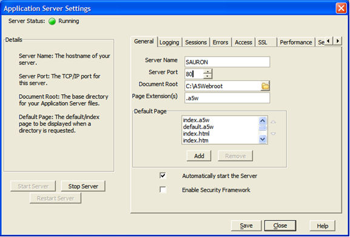
Then click the Sessions tab and enter your license key (a.k.a. serial number). Once it is entered, click the Activate button to activate it.
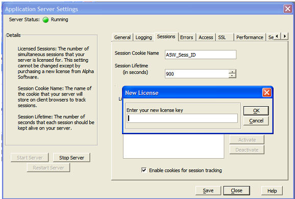
Install the Windows Server 2003 Resource Kit Tools
Download a copy of the Windows Server 2003 Resource Kit Tools from the Microsoft website. The link can be found here:
Once downloaded, run the software to install it.
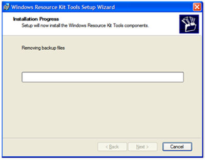
Copy INSTSRV and SRVANY and then run them in a DOS window
This next step is going to set up a new service. To begin open Windows Explorer by choosing Run from the Windows Start menu. When the Run dialog box appears, type explorer.exe then click OK.
On the root of your C drive, create a folder called SRVMKR (which is short for "service maker".)
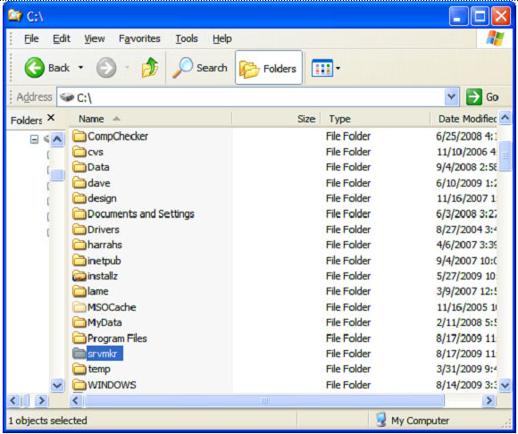
When that is created, go to installation path for the Resource Kit you installed. If you chose the default path during installation, then look here:
C:\Program Files\Windows Resource Kits\Tools
Now we need to find two files that were installed with the resource kit, they are: instsrv.exe and srvany.exe
Copy these two programs and paste a copy of them in the SRVMKR folder you created earlier.
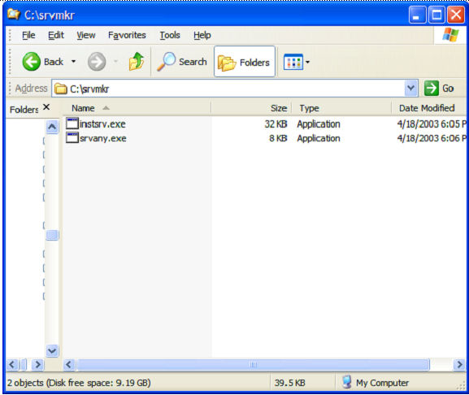
From the Windows Start menu choose Run. When the Run box appears, type CMD and click OK.
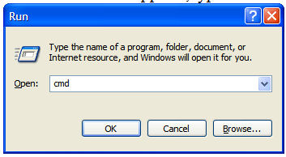
At the DOS prompt type: CD c:\servmkr\ and press the Enter key.
Then type: instsrv.exe A5ApplicationServer c:\srvmkr\srvany.exe and press the Enter key. (Note: some of the images that follow may not match the instructions exactly, because they were taken using an older version of Alpha Five.)
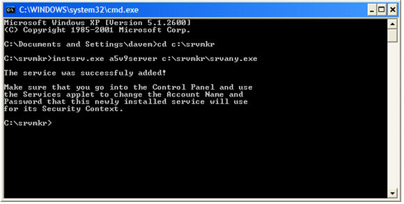
You'll get a "The Service was Successfully Added!" message. You can now close the DOS window.
Just one more step...
Edit the registry
Open the registry. From the Windows Start menu, choose Run. Then type REGEDIT and click OK.
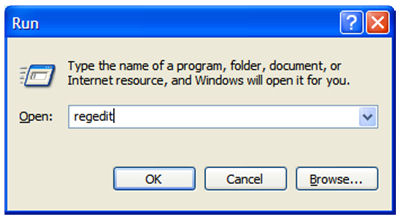
When the Registry Editor appears, use the Tree control on the left side to drill down until you come to the following entry:
HKEY_LOCAL_MACHINE\SYSTEM\CurrentControlSet\Services\A5ApplicationServer
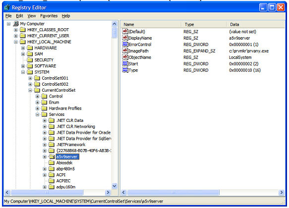
Right click on the A5ApplicationServer entry and choose New>Key
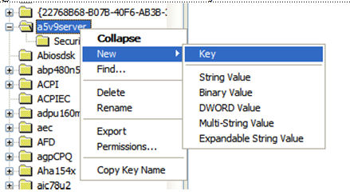
Name the new Key Parameters
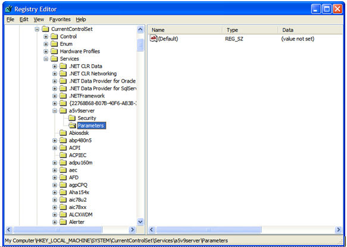
Right click on the Parameters key and choose New > String Value. And name the new string Application.
Now right click on the Application string and choose Modify. The Edit String box appears. In theValue data: box, enter the Path and executable name for the Alpha Five Application Server.
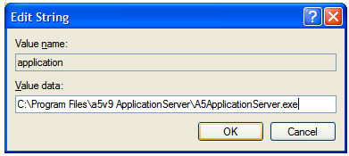
The default for the Alpha Five V10 server on a 64-bit OS is:
C:\Program Files (x86)\a5v10 ApplicationServer\A5ApplicationServer.exe
(You can copy the path from this document and paste into the Edit String box if you like.)
Reboot and check
At this point you should be all set. So let's test. The best way to see if everything has been installed correctly is to reboot your PC.
When Windows restarts, choose Run from the Windows Start menu. Then type in MSCONFIG and click OK. (Alternatively, for Windows XP and later, right-click on the system toolbar, select Start Task Manager, and view the Services tab in Windows Task Manager.)
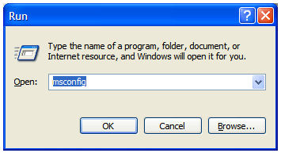
When the System Configuration Utility appears, click on the Services tab. You should see A5ApplicationServer, and it should be listed as running.
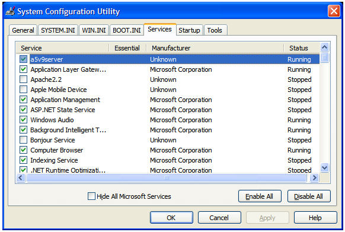
You've done it! Whenever your PC reboots -- even if you don't log in, the Alpha Five Application Server will run.
* Note: Microsoft does not officially support 'srvany' on all operating systems. Use at your own risk on unsupported systems. See http://support.microsoft.com/kb/137890